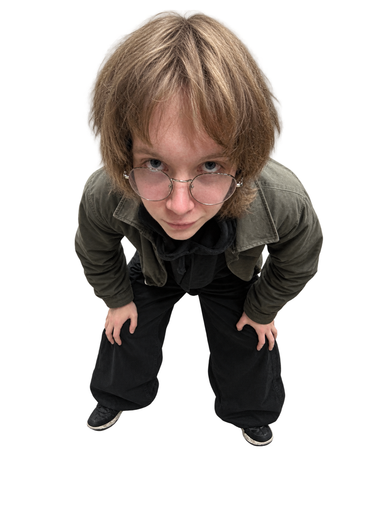
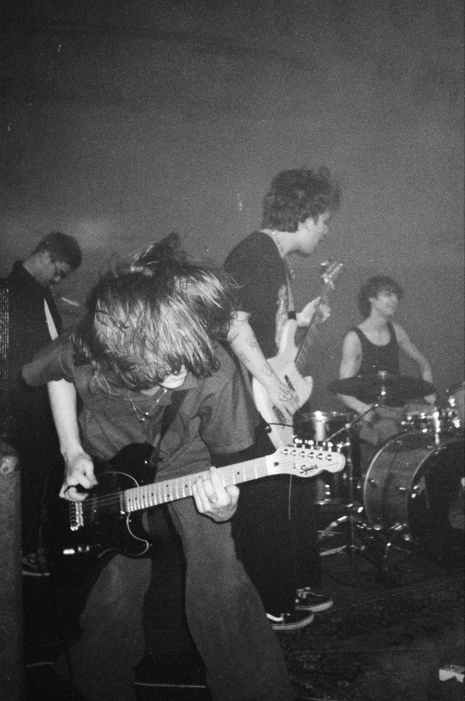
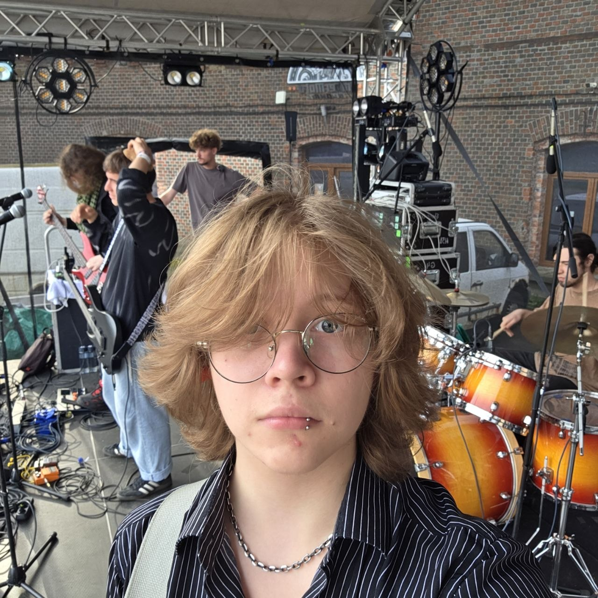

Максим — самый новый участник расширенного состава. Он присоединился к группе для живых выступлений.
В TikTok его называют «новым гитаристом КСБ».
У Максима есть сольный проект Max knutov на стримингах — треки «твои глаза», «Всегда со мной», «Взросление», «лето», «blame you» и другие. Жанр — альтернатива, около 7 тысяч слушателей в месяц на Яндекс Музыке.